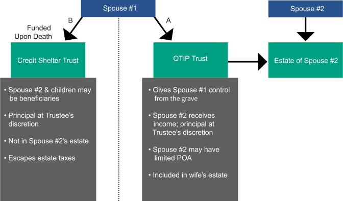

The General Power of Appointment Marital Trust has historically been a very popular planning technique, but the price of qualifying it for the marital deduction is to give up control over how the assets might ultimately be transferred by the surviving spouse. As our society has changed, with divorce and remarriage becoming increasingly common, this has become increasingly unacceptable. Therefore, estate planners needed a technique that would allow the Marital Trust to qualify for the marital deduction without having to give the surviving spouse control over the ultimate disposition of the trust assets.
The technique that accomplished this is known as a QTIP (Qualified Terminable Interest Property) Marital Trust. A terminable interest in property is one that will terminate upon death. For example, if a person receives income from a trust during life, but at death the assets are distributed to other beneficiaries according to the terms of the trust, then that person has an interest that terminates upon their death. Such "terminable interests" are not ordinarily included in a person's estate. But as long as certain technicalities are met, a Marital Trust can be constructed with a terminable interest, yet qualify for the marital deduction.
In other words, it is possible, in our previous illustration, for John and Susan Dollar to plan for Marital Trusts that will direct the ultimate disposition of the assets to their children, prevent the surviving spouse from changing the distribution, and still qualify the trust for the marital deduction. That is truly control from the grave! That is why this continues to be a very popular planning technique today, especially in cases of second marriages. Here is a diagram of how it works:

Among the technicalities is the requirement that the surviving spouse must receive all income from the trust. But unless the donor desires to give the surviving spouse a limited power of appointment (for example, limiting the ultimate distribution to the children, but allowing the surviving spouse to decide how it is to be prorated among them), it is the donor who will decide how the assets ultimately transfer, not the surviving spouse.
For a more detailed summary on the QTIP Marital Trust, proceed to the next page.